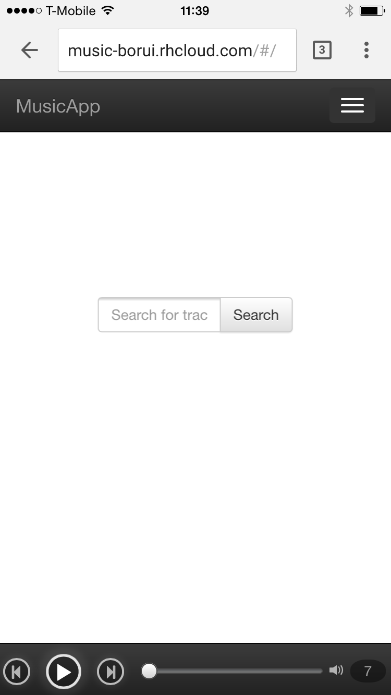

The goal of my Web Development project is to create a music app.
An anonymous user can:
it all starts from one simple line:
var player = new Audio();
Player controls:
Playlist controls:
Used $emit to communicate with state controllers
Used ui-router to create nested views.
This is especially useful because of the nature of my project:
A user may open multiple instances (tabs) of my project, and I need to ensure that at any given time at most one of the instances is playing music. Else it would create a chaos.
I achieved this by setting localStorage on playing, and add listener to storage event.
Created filters for:
Created directive focusOn (for example in html focus-on="focusLogInForm") to automatically set focus when the expression evaluates to true
sign in in comment area)border-radius, box-shadow and text-shadow (for example control buttons in player)Let screenshots speak
Link:
phpMyAdminUser: adminmwuUVlR
Password: yfjg6-HIbGQw
(Comment
(Follow
(Mylist
(